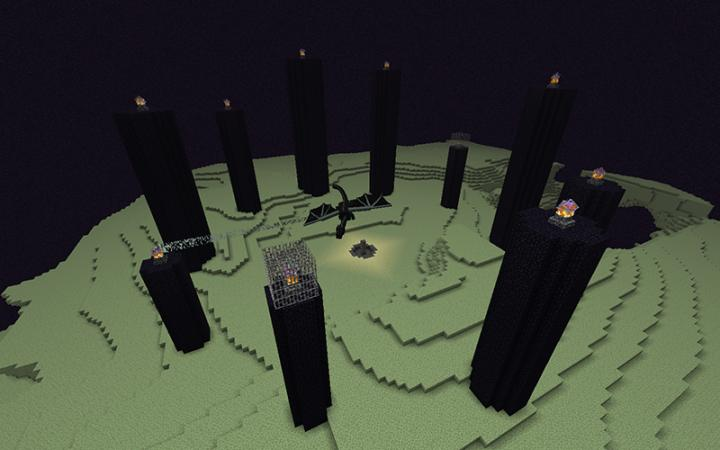

[MC]我的世界原版 (Minecraft) 的 群系/群落 资料
| 主世界 |
|
| 下界 |
|
| 末地 |
|
| 名称 |
简介 |
图片 |
| 平原 |
平原（Plains）生物群系是一个常见的茂密生物群系，它是第一个加入到游戏中的生物群系。
平原十分平坦，起伏较低，周围通常被山地、河流、丘陵或是森林环绕。海拔一般在y=64~70之间。
平原生物群系只有1个变种：向日葵平原。 |
|
| 沙漠 |
沙漠（Desert）是一种常见、温暖的生物群系，是首批被加入到游戏中的生物群系之一。
沙漠中的大部分是由沙子构成的平原和丘陵，上面点缀着一些仙人掌和枯死的灌木，很难见到河流和湖泊。
沙漠总共有两种变种：沙漠丘陵和沙漠湖泊。 |
|
| 黑森林 |
黑森林（Dark Forest）是一种森林类型的生物群系，以茂密的树冠著称，共有一个变种：黑森林丘陵。
相较于其他森林类生物群系，黑森林的树木要密集得多，树冠遮天蔽日。橡树，深色橡树和（罕见的）桦树可在此生成，这是唯一自然生成深色橡木的生物群系。此外，两种巨型蘑菇均会在这里生成，其中红色的品种较为常见。类似于普通的森林，玫瑰丛和欧丁香可在此生物群系生成，也会有常见的蒲公英和虞美人。草和树叶在此生物群系会显示为鲜艳的深绿色调。
这里的地形有较多的丘陵，湖泊频繁生成。自然生成的熔岩湖可能会引起毁灭性的森林火灾，因为这里可燃的原木和树叶极其密集；在雷暴天气中击中树木的闪电也能够导致类似的后果，尽管闪电引起的火情往往很快就被雨水扑灭。
林地府邸是黑森林所独有的，它是一种在林间生成的庞大建筑，有着多种房间和珍贵的战利品。林地府邸是唯一能自然生成灾厄村民（卫道士和唤魔者）的地方。
尽管玩家永远不会缺木头，在这里生存仍然比在其他类型的森林要难得多。茂密的树冠遮挡了阳光，以至于有些地方会黑暗到在白天也能生成攻击型生物。此外，攻击型生物还能够生成在巨型蘑菇顶上并突然掉下来，当落在玩家附近时玩家需要面对这一意外。未经充分准备就去探索林地府邸是很危险的，因为庞大的建筑内有难对付的灾厄村民和常规的攻击型生物。高密度的树木使得玩家在不用火把或其他显眼的物品标记路线时很容易迷路。使用打火石可以引燃并清除一些树木。 |
|
| 石岸 |
石岸（Stone Shore）在山地或繁茂的山地与海洋接壤的地方生成。它们完全由石头制成，带有一些沙砾区域，并且通常会陡峭地落入下面的水中。石岸可能会生成足够高的高度，以让其山峰上积雪。瀑布和熔岩瀑布经常在石岸两侧生成。沉船和水下遗迹不会在这里生成，海龟也不会生成，尽管埋藏的宝藏仍然可能在石质悬崖内生成。陡峭的下降到下面的海洋使这种变体变得危险，特别是如果玩家不知道他们周围的环境。如果沙砾山地或沙砾山地+与海洋接壤，则会生成一个普通的沙滩。 |
|
| 恶地 |
原型为美国中部的富含铁锈土与粘土的红色荒漠。
红沙、红砂岩、陶瓦以及允许范围内的红色、橙色、黄色、棕色、白色与浅灰色的染色陶瓦的唯一的天然生成地。金矿在这里最高可在79层生成，同时其高地变种常生成明显高于海平面的废弃矿井，且其支架由深色橡木板与深色橡木栅栏构成。
在1.13的18w19a快照之前被称为平顶山（Mesa）。 |
|
| 巨型针叶林 |
正常的针叶林可以被认为是森林生物群落的较冷对应物，而巨型针叶林可以被认为是丛林生物群系的较冷对应物。巨型针叶林常常生成在被正常针叶林包围的地方。云杉树在整个景观中生长，就像常规的针叶林一样，但大多数都是大型的2x2变种，它们比普通的云杉树高得多，并且与高大的丛林树相对应。地形相当平坦，就像普通的针叶林一样，但大部分的草地被大片的灰化土和砂土所取代；这是1.14之前唯一可以自然发现灰化土的生物群系（在1.14，竹林也会发现一些灰化土）。此外，由苔石构成的“巨石”经常生成在地面上，并且在地面上的蕨和草丛（在本站统一定向至这里）之间可能会生成枯死的灌木丛。狼可能会在这里生成，因为它们可以在所有针叶林的变种生物群系中生成，兔子也会在这里生成。
由于这里的气候寒冷，降雨会在较高海拔的地区变为降雪，尽管这种情况很少发生在丘陵地带，因为降雪线很高。与正常的针叶林相比，巨型针叶林中的树木总体更多，导致树叶密度增加。这使得木材更加丰富，尽管其中很大一部分是高2x2云杉树组成，但它可能更难获得。由于这个原因，巨型针叶林比普通针叶林生存起来要困难得多，尽管适应并使用策略（推荐旋转折返伐木法）来清除高大的树木，它们并不是那么糟糕；与普通的针叶林相比，它们可能会提供更多独特的风貌。 |
|
| 丛林 |
欢迎来到可可与从林木及其它丛林树制品的唯一来源，这里还会生成豹猫、西瓜与熊猫。
森林茂密的生物群系，其密度与黑森林的媲美；然而与轮廓敦实的黑橡树不同，大型丛林树生长得非常高，是游戏中最高的树，其中最高的树高度超过30格方块。橡树也可能在高大的丛林树丛中生长，在丛林的地板上生长着由橡树树叶和一格丛林木原木组成的“灌木丛”（基岩版有4种组合），这常常阻碍下方的草皮生成动物。许多这两种类型的树叶和原木被藤蔓覆盖。
丛林中偶尔会出现几株竹子，不过它会在丛林的变种竹林中更加常见。 |
|
| 竹林 |
（既然冰刺平原作为冰原的变体之一出于实用性目的都能在本站过审，那么作为丛林的变体的它也必须上线。）
大面积生成在通常的丛林中。竹林里的树木远不如丛林浓密，可与丛林边缘相媲美，但竹林拥有数不尽的竹子横穿其中。大片的草方块被替换为灰化土，与巨型针叶林相似。另外，所有自然生成的树木都是大型变种，即只有2x2的丛林树与树枝繁杂的大型橡树可能生成，不过多数橡树只是那种小型的“气球”树。玩家种植的树木可以是任意大小。所有丛林独有的生物包括熊猫也可在此生成。在基岩版中熊猫在竹林里生成的几率会比在常规丛林里的几率高一些（豹猫与鹦鹉并没有莫得）。丛林神庙也可以生成在竹林里。 |
|
| 灵魂沙峡谷 |
灵魂沙峡谷是大型的类洞窟地形，地貌广阔且与下界平常的地域有明显的分界。这个群系显著的特征是：暴露在外、形态各异的下界化石，大量的熔岩，蓝色的迷雾，由玄武岩组成的巨柱，在地表燃烧的灵魂火，以及偶尔生成的下界要塞。生物群系本身由灵魂沙、玄武岩和灵魂土组成。
在灵魂沙峡谷中，恶魂有很高的生成概率，骷髅和末影人会频繁成群生成，再加上灵魂沙会降低玩家的移动速度，这些因素使得穿过该群系是极其危险的一件事。建议避开该群系，除非玩家有足够的装备或策略来探索这一领域。 |
|
| 诡异森林 |
诡异森林中生长着大型的诡异的巨型菌，诡异巨型菌上偶尔会生长着一些菌光体。此生物群系的地面由地狱岩和诡异菌岩组成，其上还零星生长着诡异菌索。
末影人在这里大量生成，但其他生物不会生成。
与绯红森林相比森林里的雾气有一种深蓝/紫色的色调。 |
 |
| 末地主岛 |
末路之地的中心岛。
这里被遥远的外岛所环绕，岛上有黑曜石柱、末影水晶、返回传送门和末地折跃门等结构，以及末影人和末影龙。 |
 |
| 末地中型岛屿 |
作为末地外岛的一部分生成。这个生物群系是从空岛的山顶到边缘悬崖的坡度。末地城会在这里生成，但紫颂树不会。 |
|
| 末地荒岛 |
作为末地外岛的一部分生成。这个生物群系是空岛的边缘，边缘下方是陡峭的悬崖。末地城和紫颂树都不会在这个生物群系中生成。 |
|
| 玄武岩三角洲 |
玄武岩三角洲是下界特有的类火山生物群系。该生物群系中由大量的玄武岩和黑石组成，空气中弥漫着灰尘颗粒。
玄武岩三角洲中会频繁生成岩浆怪。除此之外，炽足兽和恶魂也会在此生成。
玄武岩三角洲是1.16的第4个下界生物群系（迫害米4达下界荒地算是原版1.16之前的生物群系）。 |
|
| 冻河 |
这种生物群系只生成在冰原生物群系。水面冻结成了冰。 |
|